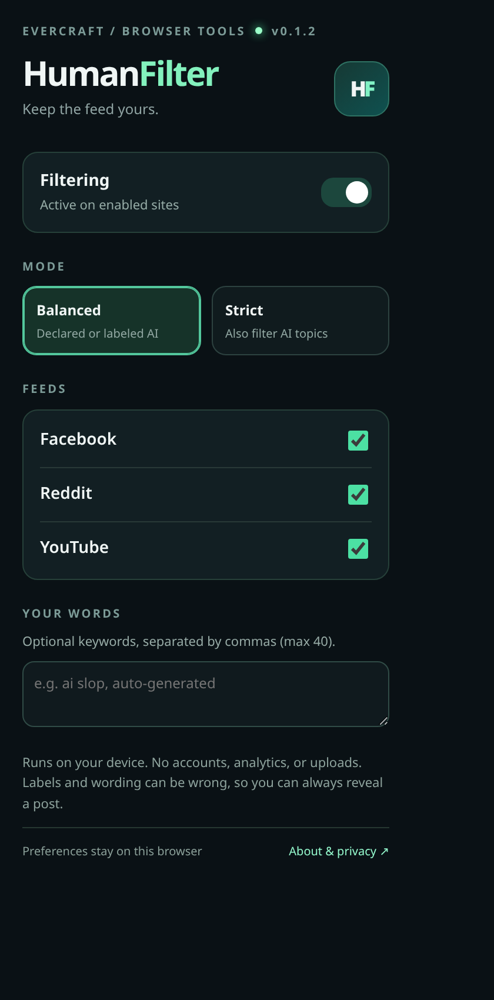

Balanced mode
Softens supported AI-labeled or explicitly self-disclosed posts in Facebook, Reddit, and YouTube desktop feeds.
Less of what you don't want to see. HumanFilter helps you soften posts with recognized AI disclosures and filter topics you choose on supported social feeds.
Free to try. No signup. No tracking inside the extension. No cloud analysis.
Using a phone? HumanFilter does not install into iPhone, Android, or native social apps. This early beta is for desktop browsers; mobile support is not available yet.

You control the filter. You can always reveal a post.
LESS NOISE. MORE CHOICE.
No mystery scores, no claims to read the mind of an algorithm. Just clear preferences you can change.
Softens supported AI-labeled or explicitly self-disclosed posts in Facebook, Reddit, and YouTube desktop feeds.
Choose your sites, add custom keywords, or use Strict mode to filter AI-related discussions too.
Use Show once to reveal any filtered post, or pause HumanFilter whenever you want.
EARLY TESTER INSTALL
This is a manual desktop beta, not a Chrome Web Store install. It won't update automatically.
Download the ZIP above on your desktop and extract it.
Open chrome://extensions in desktop Chrome and turn on Developer mode.
Select Load unpacked and choose the extracted folder containing manifest.json.
Open a supported feed, then use HumanFilter's extension popup to choose your settings.
Only install browser extensions from sources you trust. This tester build is unsigned and must be manually updated. Inspect the source and tests.
PLATFORM STATUS
Other browser builds are experimental. Only the desktop Chromium package has the current automated installation checks; real-world compatibility can vary with social-platform changes.
Manual download and Load unpacked.
Download Chrome ZIPChromium-compatible candidate. Independent live browser testing is ongoing.
Download Edge tester ZIPTemporary developer add-on, removed on restart; no Mozilla-signed install yet.
Download Firefox tester ZIPApple source packaging is prepared; there is no installable Mac, iPhone, or iPad app yet.
No consumer downloadDevelopers can download the full browser release kit. Brave, Opera, and Vivaldi may use the Chromium ZIP but are not independently certified.
A CLEAR PROMISE
HumanFilter filters recognized disclosure labels, certain explicit AI-generation phrases, and topics you choose. It does not prove whether a post was AI-generated, and it won't recognize every unlabeled image, video, or text post. False positives and missed posts are possible.
Strict mode intentionally hides some human-written discussions of AI, too.
FREE DESKTOP BETA
Try the early version and tell us what works on your real feed.
Get HumanFilter v0.1.4Chrome Web Store review is not complete. A one-click store installation is not available yet.